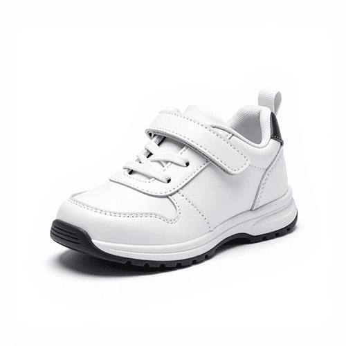

Что это за программа
«Чудо Обувь» — готовое приложение для заказа обуви: C# Windows Forms (.NET Framework 4.8) + Microsoft SQL Server LocalDB. Это упрощённая редакция: минимум рукописного кода, максимум визуального создания форм в конструкторе Visual Studio. В .cs-файлах нет ни одной SQL-команды — все обращения к базе идут через типизированный набор данных Чудо_ОбувьDataSet.xsd и адаптеры таблиц, которые генерирует мастер.
| Кто вошёл | Что может |
|---|---|
| Гость (без входа) | смотреть каталог |
| Авторизованный пользователь | каталог с поиском, фильтром и сортировкой; карточка товара; корзина; оформление заказа |
| Менеджер | всё это + список заказов, состав заказа, добавление и удаление заказа, выбор клиента |
| Администратор | всё менеджерское + смена даты заказа и удаление позиции заказа |
Задание 5 (вариативная часть) добавляет персоналу окно «Статистика заказов»: таблица всех заказов с итоговыми суммами и три показателя — количество заказов, общая выручка, средний чек. Пошаговый разбор — на странице Задания 5.
Как окна открываются друг из друга:
Вход (LoginForm)
└── Каталог (MainForm) ──► Карточка товара (ProductForm) ──► «В заказ»
├── Корзина (CartForm) ──► подтверждение → заказ в базе
└── Заказы (OrdersForm) [менеджер, администратор]
└── «Добавить» ──► Каталог (режим выбора) ──► Корзина ──► выбор клиентаОкно Статистика заказов (StatisticsForm) открывается из каталога по кнопке «Статистика» — только у менеджера и администратора.
Скачать
*.cs и *.Designer.cs, файл решения .sln, готовая локальная база Чудо_Обувь.mdf), скрипт БД Database/Database.sql (результат задания 1), README.md и руководство пользователя Руководство_пользователя.docx. Содержит все 5 заданий: каталог, заказы и окно «Статистика заказов»..exe там нет. Программу собирают в Visual Studio: откройте ChudoObuvOrders.sln → F5. Никакого .bat-файла для сборки нет и быть не должно — по заданиям экзамена студент создаёт проект с нуля сам, поэтому важно уметь пройтись по шагам ниже.Как создать всё в Visual Studio
Программу собирают только в Visual Studio — никаких .bat-файлов и внешних компиляторов. Разбор соответствует профильному уровню ДЭ 09.02.07-2-2027: задания 1–4 — инвариативная часть, задание 5 — вариативная. Ниже — полный разбор по шагам: проект, база данных, таблицы, данные, набор данных, формы, код, запуск. Каждое действие — мышкой в меню Visual Studio и SQL Server; SQL-запросы писать не нужно.
Шаг 1. Создать проект
Windows Forms → выберите шаблон «Приложение Windows Forms (.NET Framework)» (важно: именно «.NET Framework», не «.NET»/«.NET Core») → Далее.| Поле | Значение |
|---|---|
| Имя проекта | ChudoObuvOrders |
| Расположение | любая папка |
| Платформа | .NET Framework 4.8 |
ChudoObuvOrders — под этим именем мастер сохраняет строку подключения, которую читает Чудо_ОбувьDataSet.Designer.cs через ChudoObuvOrders.Properties.Settings.Default.ConnectionString.Шаг 2. Добавить локальную базу данных
База хранится файлом .mdf прямо в папке проекта. Используется LocalDB — лёгкая версия SQL Server, встроенная в Visual Studio; имя сервера и права администратора не нужны.
ChudoObuvOrders → Добавить → Новый элемент… (Ctrl+Shift+A) → найдите «База данных на основе служб (SQL Server)» → имя Чудо_Обувь.mdf → Добавить.Чудо_Обувь.mdf в «Обозревателе решений» → F4 → свойство «Копировать в выходной каталог» = «Копировать более позднюю версию» (Copy if newer). Без этого база не попадёт в bin\Debug и программа не запустится.Двойной клик по Чудо_Обувь.mdf — в «Серверном обозревателе» (слева) появится подключение (LocalDB)\MSSQLLocalDB\…Чудо_Обувь.mdf. База пока пустая — таблицы создадим на следующем шаге.
Шаг 3. Создать таблицы в конструкторе
Таблицы создаются мышкой в конструкторе SQL Server — прямо внутри Visual Studio. SQL писать не нужно.
Чудо_Обувь.mdf → ПКМ по узлу «Таблицы» → «Добавить новую таблицу».В открывшемся конструкторе задайте колонки таблицы: имя, тип данных, разрешить NULL. Для каждой таблицы:
| Таблица | Колонки |
|---|---|
Роли | Код_роли (int, IDENTITY, PK) · Название_роли (nvarchar(50), NOT NULL, UNIQUE) |
Пользователи | Код_пользователя (int, IDENTITY, PK) · Фамилия (nvarchar(100)) · Имя (nvarchar(100)) · Отчество (nvarchar(100), NULL) · Логин (nvarchar(50), UNIQUE) · Код_роли (int, FK → Роли) |
Категории | Код_категории (int, IDENTITY, PK) · Название_категории (nvarchar(100), UNIQUE) |
Товары | Код_товара (int, IDENTITY, PK) · Код_категории (int, FK → Категории) · Подкатегория (nvarchar(100), NULL) · Наименование (nvarchar(255)) · Производство (nvarchar(150)) · Описание (nvarchar(MAX), NULL) · Состав (nvarchar(MAX), NULL) · Изображение (nvarchar(255), NULL) · Цена (decimal(10,2), CHECK ≥ 0) |
Размеры | Код_размера (int, IDENTITY, PK) · Размер (decimal(4,1)) |
Товарные_позиции | Код_позиции (int, IDENTITY, PK) · Код_товара (int, FK → Товары) · Код_размера (int, FK → Размеры) · Количество (int) |
Заказы | Код_заказа (int, IDENTITY, PK) · Дата_заказа (datetime2) · Код_пользователя (int, FK → Пользователи) |
Строки_заказов | Код_строки (int, IDENTITY, PK) · Код_заказа (int, FK → Заказы) · Код_позиции (int, FK → Товарные_позиции) · Количество (int) · Цена_за_единицу (decimal(10,2)) |
После каждой таблицы нажмите «Обновить» (или Ctrl+S) — Visual Studio сгенерирует SQL и применит его к базе. Разверните узел «Таблицы» в «Серверном обозревателе» — увидите все 8 таблиц.
Шаг 4. Заполнить таблицы данными
Данные можно вводить прямо в таблицу: ПКМ по таблице в «Серверном обозревателе» → «Показать данные таблицы» → откроется сетка, где можно вводить строки вручную. Для больших объёмов удобнее импортировать из Excel: скопируйте столбцы из Excel и вставьте в сетку (Ctrl+V).
isivanov, papetrov, asidorova и др.), 4 категории, 5–10 товаров, размеры 35–45, товарные позиции с остатками.downloads/excel/ на главной странице.Шаг 5. Диаграмма базы данных
Для ER-диаграммы (требование Задания 1): в «Серверном обозревателе» ПКМ по узлу «Диаграммы баз данных» → «Добавить новую диаграмму» → выделите все 8 таблиц → «Добавить». Visual Studio нарисует схему со связями. Сохраните диаграмму, а для PDF — сделайте снимок экрана и распечатайте в PDF (или экспортируйте через diagrams.net).
Шаг 6. Создать типизированный набор данных
Набор данных — это «карта» базы для программы: классы таблиц, адаптеры с командами Fill/Update и связи между таблицами. Мастер Visual Studio генерирует весь этот код автоматически — SQL писать не нужно.
Чудо_ОбувьDataSet.xsd → Добавить.Чудо_Обувь.mdf → «Таблицы») все 8 таблиц по одной на холст. Мастер создаст TableAdapter для каждой таблицы с командами Fill и Update, и автоматически настроит связи между таблицами по внешним ключам.Роли → Пользователи, Категории → Товары, Товары → Товарные_позиции, Размеры → Товарные_позиции, Пользователи → Заказы, Заказы → Строки_заказов, Товарные_позиции → Строки_заказов.Сохраните .xsd. Visual Studio сгенерирует Чудо_ОбувьDataSet.Designer.cs — в нём будут классы Чудо_ОбувьDataSet, ЗаказыDataTable, ПользователиTableAdapter и т. д.
Шаг 7. Проверить строку подключения
Когда вы перетаскиваете таблицы в набор данных, мастер сам создаёт параметр приложения ConnectionString в Properties/Settings.settings и App.config. Строка должна выглядеть так:
Data Source=(LocalDB)\MSSQLLocalDB;
AttachDbFilename=|DataDirectory|\Чудо_Обувь.mdf;
Integrated Security=True;Connect Timeout=30App.config текстовым редактором и приведите к виду выше. |DataDirectory| подставляет папку с .exe (при запуске из Visual Studio — bin\Debug).Шаг 8. Добавить ссылки на сборки
System.Configuration— нужен, чтобыSettings.Defaultнаходил строку подключения;System.Data.DataSetExtensions— нужен для LINQ по строкамDataTable.
Остальные ссылки (System, System.Data, System.Drawing, System.Windows.Forms, System.Xml) добавляет сам шаблон проекта.
Шаг 9. Добавить ресурсы
Resources; внутри ещё Images. ПКМ по Resources → Добавить → Существующий элемент… → выберите chudo_obuv.ico, chudo_obuv.png, picture.png. В Images — все фотографии товаров.Resources (Shift+клик) → F4 → «Копировать в выходной каталог» = «Копировать более позднюю версию» (Copy if newer). Без этого программа упадёт с «файл не найден».chudo_obuv.ico.Шаг 10. Создать формы
Создайте 6 форм и 1 пользовательский элемент управления: ПКМ по проекту → Добавить → Форма Windows Forms… (для ProductCard — «Пользовательский элемент управления»).
| Файл | Тип | За что отвечает |
|---|---|---|
LoginForm | Form | вход по логину и «Без входа» |
MainForm | Form | каталог: поиск, фильтр, сортировка, скидка |
ProductCard | UserControl | карточка товара в каталоге |
ProductForm | Form | просмотр товара, выбор размера и количества |
CartForm | Form | корзина и оформление заказа |
OrdersForm | Form | заказы: список, состав, удаление, дата, позиции |
StatisticsForm | Form | статистика заказов (Задание 5) |
На каждой форме в конструкторе расставьте элементы мышкой (кнопки, поля, таблицы) из «Панели элементов» (Toolbox) и задайте свойства в окне «Свойства» (F4): текст, шрифт, цвет, привязки событий. Подробные таблицы свойств для каждой формы — в разборе Задания 2 (раздел 8) и Задания 3.
Form1.cs, созданный студией по умолчанию, удалите: ПКМ по нему → «Удалить».Шаг 11. Скопировать логику форм
Код форм (обработчики кнопок, заполнение данными через адаптеры) скопируйте из соответствующих .cs файлов архива ChudoObuv.zip — там всего 6 коротких файлов по 30–90 строк каждый. Файлы Session.cs и Program.cs — целиком. Внешний вид окон в этих файлах не задаётся — он настроен мышкой в конструкторе.
Шаг 12. Запустить
isivanov (администратор), papetrov (менеджер), asidorova (пользователь) — вход без пароля.| Ошибка | Причина | Решение |
|---|---|---|
| «Cannot open database» | база не создана или строка подключения неверная | проверьте App.config — должен быть AttachDbFilename=|DataDirectory|\Чудо_Обувь.mdf; убедитесь, что Чудо_Обувь.mdf есть в проекте |
| «файл не найден» / «Could not find file» | рядом с .exe в bin\Debug нет папки Resources | проверьте у файлов в Resources свойство «Копировать в выходной каталог» = «Копировать более позднюю версию» |
| пустое окно каталога | база пустая или таблицы не заполнены | проверьте данные в таблицах: ПКМ по таблице → «Показать данные таблицы» |
| CS0117 «Settings» не содержит «Default» | Properties/Settings.Designer.cs сгенерирован неправильно | удалите Settings.Designer.cs, откройте Settings.settings дизайнером, сохраните — студия перегенерирует файл |
Шаг 13. Создать скрипт базы данных
Для сдачи (Задание 1) нужен скрипт БД со структурой и данными. Создать его — одним меню:
Чудо_Обувь.mdf → «Задачи → Создать скрипты…» → в мастере: выберите все таблицы → на вкладке «Дополнительно» задайте «Тип данных для записи» = «Данные и схема» (Types of data to script = Schema and data) → «Далее» → сохраните в файл Database.sql.Положите Database.sql в папку Database/ в корне репозитория — это и есть результат Задания 1.
Шаг 14. Собрать Release-версию
Для сдачи нужна папка Bin/ с исполняемыми файлами. Сверху в Visual Studio выберите конфигурацию Release → «Сборка → Собрать решение» (Build → Build Solution, Ctrl+Shift+B). Готовые файлы — в bin\Release; скопируйте всё содержимое в папку Bin/ репозитория. Рядом с .exe должны лежать ChudoObuvOrders.exe.config, Чудо_Обувь.mdf, Чудо_Обувь_log.ldf и папка Resources/.
Что сдавать: структура папки
По КИМ все практические результаты загружаются в репозиторий, который предоставят на экзамене. Результаты нужно загружать по ходу работы, а не в конце.
ChudoObuvOrders/ ← корень репозитория
├── README.md ← описание функциональности (обязательно)
├── ER_Чудо_Обувь.pdf ← ER-диаграмма
├── Database/
│ └── Database.sql ← скрипт БД: таблицы + данные
├── Import/ ← подготовленные файлы Excel/CSV для импорта
├── Source/ ← исходный код (папками, НЕ архивом)
│ ├── ChudoObuvOrders.sln
│ └── ChudoObuvOrders/
│ ├── ChudoObuvOrders.csproj
│ ├── App.config ← строка подключения к локальной базе
│ ├── Чудо_Обувь.mdf Чудо_Обувь_log.ldf ← локальная база
│ ├── Чудо_ОбувьDataSet.xsd ← типизированный набор данных
│ ├── Program.cs Session.cs
│ ├── LoginForm.cs LoginForm.Designer.cs LoginForm.resx
│ ├── MainForm.cs MainForm.Designer.cs MainForm.resx
│ ├── ProductCard.cs ProductCard.Designer.cs
│ ├── ProductForm.cs ProductForm.Designer.cs ProductForm.resx
│ ├── CartForm.cs CartForm.Designer.cs CartForm.resx
│ ├── OrdersForm.cs OrdersForm.Designer.cs OrdersForm.resx
│ ├── StatisticsForm.cs StatisticsForm.Designer.cs StatisticsForm.resx
│ ├── Properties/ ← Settings.Designer.cs, Settings.settings
│ └── Resources/ ← иконка, логотип, picture.png, Images/
└── Bin/ ← исполняемые файлы
├── ChudoObuvOrders.exe
├── ChudoObuvOrders.exe.config ← строка подключения для .exe
├── Чудо_Обувь.mdf Чудо_Обувь_log.ldf
└── Resources/ ← те же картинки рядом с .exe
Руководство_пользователя.docx ← задание 5: 1–2 страницы, ≥ 3 скриншотов своей программы| Что | Откуда взять |
|---|---|
README.md | создайте сами: что умеет программа, роли, как запустить (образец — в архиве) |
ER_Чудо_Обувь.pdf | диаграмма базы данных в Visual Studio (Серверный обозреватель → Чудо_Обувь.mdf → Диаграммы баз данных) или diagrams.net: схема по разбору задания 1 → экспорт в PDF |
Database/Database.sql | скрипт со структурой и данными: студент создаёт сам через «Задачи → Создать скрипты» (разбор задания 1, раздел 10; в архиве программы — образец результата) |
Source/ | папка решения Visual Studio целиком, кроме bin, obj, .vs |
Bin/ | Visual Studio: сверху выберите Release → Build → Build Solution → скопируйте содержимое Source\ChudoObuvOrders\bin\Release |
Руководство_пользователя.docx | задание 5: назначение, вход, функции + 3 скриншота своей программы (образец — в разделе «Скачать») |
.vs, obj; пароли и личные данные; .bat-файлы для сборки — по заданиям проект собирают в Visual Studio.Из чего состоит программа
| Файл | За что отвечает |
|---|---|
Program.cs | запуск: окно входа → каталог; «Выйти» возвращает ко входу |
Session.cs | кто вошёл (UserId, роль), права, корзина и общая копия данных программы — экземпляр Чудо_ОбувьDataSet |
LoginForm | окно входа по логину и «Без входа» |
MainForm | каталог: поиск, фильтр, сортировка, скидка |
ProductCard | одна карточка товара в каталоге (подсветка, «много/мало», картинка) |
ProductForm | форма просмотра товара и выбор размера |
CartForm | корзина и оформление заказа |
OrdersForm | заказы: список, состав, удаление, дата, позиции |
StatisticsForm | статистика заказов (задание 5): таблица всех заказов + 3 показателя |
Чудо_ОбувьDataSet.xsd | тиизированный набор данных: схема таблиц и адаптеры с командами Fill/Update — генерируется мастером VS |
Чудо_ОбувьDataSet.Designer.cs | код набора данных — генерируется из .xsd автоматически |
*.Designer.cs | внешний вид окон — их создаёт Visual Studio, когда вы рисуете форму мышкой; писать вручную не нужно (лежат в архиве) |
Resources/ | иконка, логотип, заглушка picture.png, фото товаров |
App.config | строка подключения к локальной базе (создаётся мастером Visual Studio) |
Чудо_ОбувьDataSet.xsd: метод Fill(таблица) читает из базы, метод Update(таблица) записывает изменения. В рукописных .cs нет ни одного слова SELECT, INSERT или SqlCommand — это и есть «упрощённая редакция».Как выглядят окна
Имя в скобках — файл формы. Цвета и шрифты в реальной программе: бирюзовая шапка #70B2AF, фон панелей #F6FAF8, основной шрифт Segoe UI.
Вход LoginForm
Каталог MainForm

Категория · Состав
1 643 ₽ · много
Категория · Состав
3 000 ₽ · мало
Просмотр товара ProductForm
Категория: Категория
Корзина CartForm
| Name | Size | Qty | Price |
|---|---|---|---|
| Кроссовки | 22 | 1 | 1643 |
Заказы OrdersForm
| Номер | Дата | Клиент |
|---|---|---|
| 1 | 02.04.2026 | Сидорова Анна |
| Модель | Размер | Кол-во | Цена |
|---|---|---|---|
| Производство | Кроссовки | 22 | 1 | 1643 |
Статистика заказов StatisticsForm
| Номер | Дата | Клиент | Сумма |
|---|---|---|---|
| 1 | 02.04.2026 | Сидорова Анна | 4980,00 |
| 2 | 05.04.2026 | Павлова Елена | 32500,00 |
| 3 | 08.04.2026 | Васильева Ольга | 33360,00 |
Окно собрано по тексту задания, без дизайна: таблица всех заказов (номер, дата, ФИО клиента, итоговая сумма) и три показателя под ней. Шрифт формы — Calibri, 10pt; фон белый.
Код: данные и запуск
Session.cs — Кто вошёл, корзина и общая копия данных
Session.Data— единственный на программу экземпляр типизированного набора данныхЧудо_ОбувьDataSet. Адаптеры таблиц заполняют его черезFill; в этой же копии код форм меняет строки и вызываетUpdate.Cart— корзина какBindingList<CartLine>; таблица корзины вCartFormпривязана к ней напрямую.- Свойства
IsAuth,IsAdmin,IsStaff— проверка роли по строкеSession.Role; их используют формы, чтобы прятать/показывать кнопки.
using System.ComponentModel;
using ChudoObuvOrders;
// Одна строка корзины.
public class CartLine
{
public int StockItemId { get; set; }
public string Name { get; set; }
public decimal Size { get; set; }
public int Qty { get; set; }
public decimal Price { get; set; }
}
// Кто вошёл, корзина и одна общая копия данных программы.
// Данные в неё кладут адаптеры из мастера (Чудо_ОбувьDataSet.xsd) — Fill, без SQL-команд.
public static class Session
{
public static readonly Чудо_ОбувьDataSet Data = new Чудо_ОбувьDataSet();
public static int UserId;
public static string FullName = "";
public static string Role = "";
public static bool LoggedOut;
public static BindingList<CartLine> Cart = new BindingList<CartLine>();
public static bool IsAuth { get { return UserId > 0; } }
public static bool IsAdmin { get { return Role.StartsWith("Админ"); } }
public static bool IsStaff { get { return IsAdmin || Role.StartsWith("Менед"); } }
public static void Clear()
{
UserId = 0; FullName = ""; Role = "";
Cart.Clear();
}
}Program.cs — Запуск программы
- Цикл «вход → каталог → выход»: пока пользователь не закрыл окно входа крестиком и не вышел из каталога кнопкой «Выйти», программа крутится.
- Кнопка «Без входа» в
LoginFormвозвращаетDialogResult.OK, ноSession.UserIdостаётся 0 — формы сами прячут лишнее поSession.IsAuth.
using System;
using System.Windows.Forms;
static class Program
{
[STAThread]
static void Main()
{
Application.EnableVisualStyles();
while (true)
{
// 1) окно входа; закрыли крестиком — выходим
using (var login = new LoginForm())
if (login.ShowDialog() != DialogResult.OK) break;
// 2) главное окно; если нажали «Выйти» — снова вход
Session.LoggedOut = false;
using (var main = new MainForm())
main.ShowDialog();
if (!Session.LoggedOut) break;
}
}
}Код: окна
Все формы — без SQL-запросов. Чтение из базы — адаптер.Fill(таблица), запись — адаптер.Update(таблица). Поиск и фильтрация — по DataView в памяти. Суммы и итоги — обычными циклами по строкам таблицы.
LoginForm.cs — Вход по логину
- Адаптер
ПользователиTableAdapterзаполняет таблицуПользователи; адаптерРолиTableAdapter— таблицуРоли. Связь между ними в наборе уже есть (FK), поэтому у строки пользователя есть навигационное свойствоРолиRow. - Поиск строки по логину — простой цикл
foreachпоds.Пользователисstring.Equals(..., OrdinalIgnoreCase).
using System;
using System.Windows.Forms;
using ChudoObuvOrders;
using ChudoObuvOrders.Чудо_ОбувьDataSetTableAdapters;
public partial class LoginForm : Form
{
public LoginForm() { InitializeComponent(); }
private void btnOk_Click(object sender, EventArgs e)
{
if (string.IsNullOrWhiteSpace(txtLogin.Text))
{
MessageBox.Show("Введите логин из списка пользователей и нажмите «Войти».", "Ошибка входа",
MessageBoxButtons.OK, MessageBoxIcon.Warning);
return;
}
var ds = Session.Data;
new ПользователиTableAdapter().Fill(ds.Пользователи);
new РолиTableAdapter().Fill(ds.Роли);
string login = txtLogin.Text.Trim();
Чудо_ОбувьDataSet.ПользователиRow user = null;
foreach (var u in ds.Пользователи)
if (string.Equals(u.Логин, login, StringComparison.OrdinalIgnoreCase)) { user = u; break; }
if (user == null)
{
MessageBox.Show("Пользователь не найден. Проверьте логин.", "Ошибка входа",
MessageBoxButtons.OK, MessageBoxIcon.Warning);
return;
}
Session.UserId = user.Код_пользователя;
Session.FullName = user.Фамилия + " " + user.Имя + (user.IsОтчествоNull() ? "" : " " + user.Отчество);
Session.Role = user.РолиRow == null ? "" : user.РолиRow.Название_роли;
DialogResult = DialogResult.OK;
}
private void btnGuest_Click(object sender, EventArgs e) { DialogResult = DialogResult.OK; }
}MainForm.cs — Каталог
- Адаптеры таблиц
Товары,Категории,Товарные_позиции,Строки_заказов,ЗаказызаполняютSession.Data. - Каталог собирается в памяти: цикл по товарам, для каждого — сумма остатков по связанным строкам
p.GetТоварные_позицииRows()и проверка, заказывали ли товар в прошлом месяце черезds.Строки_заказов. - Скидка 25 %, если в прошлом месяце заказов не было:
price = ordered ? p.Цена : Math.Round(p.Цена * 0.75m, 2). - Поиск, фильтр и сортировка —
DataViewпо готовой таблице:view = new DataView(t, filter, sort, CurrentRows). Это не SQL.
void LoadCatalog()
{
if (!ready) return;
var ds = Session.Data;
new ТоварыTableAdapter().Fill(ds.Товары);
new КатегорииTableAdapter().Fill(ds.Категории);
new Товарные_позицииTableAdapter().Fill(ds.Товарные_позиции);
new Строки_заказовTableAdapter().Fill(ds.Строки_заказов);
new ЗаказыTableAdapter().Fill(ds.Заказы);
var thisMonth = new DateTime(DateTime.Today.Year, DateTime.Today.Month, 1);
var from = thisMonth.AddMonths(-1);
var t = new DataTable("Каталог");
t.Columns.Add("ProductId", typeof(int));
// ... ещё 9 колонок ...
foreach (var p in ds.Товары)
{
int qty = 0;
foreach (var s in p.GetТоварные_позицииRows()) qty += s.Количество;
bool ordered = false;
foreach (var oi in ds.Строки_заказов)
{
var pos = oi.Товарные_позицииRow;
if (pos == null || pos.Код_товара != p.Код_товара) continue;
var o = oi.ЗаказыRow;
if (o != null && o.Дата_заказа >= from && o.Дата_заказа < thisMonth) { ordered = true; break; }
}
decimal price = ordered ? p.Цена : Math.Round(p.Цена * 0.75m, 2);
// ... добавить строку ...
}
var view = new DataView(t, filter, sort, DataViewRowState.CurrentRows);
pnlCatalog.Controls.Clear();
foreach (DataRowView row in view)
{
var card = new ProductCard();
card.Bind(row.Row);
card.Clicked += OpenProduct;
pnlCatalog.Controls.Add(card);
}
btnCart.Text = "Корзина (" + Session.Cart.Count + ")";
}ProductCard.cs — Карточка товара в каталоге
UserControl: панель с картинкой, двумя надписями. Вся карточка кликабельная — один обработчикCard_Clickнавешан и на панель, и на картинку, и на обе надписи.- Мало на складе (3 и меньше) — фон карточки красный (
Color.FromArgb(255,128,128)), иначе белый. - Картинка берётся из
Resources/Images/по имени файла; нет файла — заглушкаResources/picture.png.
public void Bind(DataRow r)
{
row = r;
int qty = (int)r["Qty"];
pnlRoot.BackColor = qty <= 3 ? Color.FromArgb(255, 128, 128) : Color.White;
lblInfo.Text = r["Manufacturer"] + " | " + r["ProductName"] + "\n"
+ r["CategoryName"] + "\nСостав: " + r["Composition"];
lblPrice.Text = ((decimal)r["Price"]).ToString("N0") + " ₽\n" + (qty > 5 ? "много" : "мало");
picImage.Image = LoadImage(r["ImageFileName"] as string);
}
public static Image LoadImage(string fileName)
{
string path = Path.Combine(Application.StartupPath, "Resources", "Images", fileName ?? "");
if (!File.Exists(path)) path = Path.Combine(Application.StartupPath, "Resources", "picture.png");
return Image.FromFile(path);
}ProductForm.cs — Карточка товара и выбор размера
- Адаптеры
Товарные_позициииРазмерызаполняют связанные таблицы; цикл поSession.Data.Товарные_позициисобирает размерный ряд и список доступных размеров. - Навигационное свойство
s.РазмерыRowдаёт размер строки склада без JOIN'а. - Ограничение
nudQty.Maximumпо остатку выбранного размера — больше остатка заказать нельзя.
// размерный ряд и свободные размеры — по строкам набора
decimal min = decimal.MaxValue, max = decimal.MinValue;
var free = new DataTable("Размеры");
free.Columns.Add("StockItemId", typeof(int));
free.Columns.Add("SizeValue", typeof(decimal));
free.Columns.Add("Quantity", typeof(int));
foreach (var s in Session.Data.Товарные_позиции)
{
if (s.Код_товара != productId) continue;
var z = s.РазмерыRow;
if (z == null) continue;
if (z.Размер < min) min = z.Размер;
if (z.Размер > max) max = z.Размер;
if (s.Количество > 0) free.Rows.Add(s.Код_позиции, z.Размер, s.Количество);
}
cmbSize.DisplayMember = "SizeValue";
cmbSize.ValueMember = "StockItemId";
cmbSize.DataSource = free;CartForm.cs — Корзина и оформление заказа
- Таблица
gridCartпривязана кSession.Cartнапрямую (BindingList<CartLine>). - Список клиентов для менеджера/админа —
DataViewпо таблицеПользователи; ФИО собирает выражение столбца"Фамилия + ' ' + Имя + ' ' + IsNull(Отчество, '')". - Оформление заказа — транзакция в наборе: сначала проверяем остатки, потом создаём строку
Заказы, для каждой позиции списываем количество и добавляем строкуСтроки_заказов, в конце —Updateвсех таблиц. Если на складе не хватило — ничего не сохраняется.
var order = ds.Заказы.NewЗаказыRow();
order.Дата_заказа = DateTime.Now;
order.Код_пользователя = clientId;
ds.Заказы.AddЗаказыRow(order);
foreach (var l in Session.Cart)
{
var pos = ds.Товарные_позиции.FindByКод_позиции(l.StockItemId);
pos.Количество -= l.Qty;
var line = ds.Строки_заказов.NewСтроки_заказовRow();
line.Код_заказа = order.Код_заказа;
line.Код_позиции = pos.Код_позиции;
line.Количество = l.Qty;
line.Цена_за_единицу = l.Price;
ds.Строки_заказов.AddСтроки_заказовRow(line);
}
new ЗаказыTableAdapter().Update(ds.Заказы);
склад.Update(ds.Товарные_позиции);
new Строки_заказовTableAdapter().Update(ds.Строки_заказов);OrdersForm.cs — Заказы менеджера и администратора
- Список заказов — таблица, собранная в памяти из
ds.Заказыс навигационным свойствомo.ПользователиRowдля ФИО клиента. Сортировка по дате —DefaultView.Sort = "Дата DESC". - Состав выбранного заказа — цикл по
order.GetСтроки_заказовRows()с навигационными свойствамиТоварные_позицииRow,ТоварыRow,РазмерыRow. - Удаление заказа — сначала вернуть остатки на склад (
s.Количество += oi.Количество), удалить строки заказа, потом сам заказ;Updateв правильном порядке. - Смена даты и удаление позиции — только администратор (
dtp.Visible = btnDate.Visible = btnDelItem.Visible = Session.IsAdmin).
var order = ds.Заказы.FindByКод_заказа(OrderId());
if (order == null) return;
foreach (var oi in order.GetСтроки_заказовRows())
{
var s = oi.Товарные_позицииRow;
if (s != null) s.Количество += oi.Количество;
oi.Delete();
}
new Строки_заказовTableAdapter().Update(ds.Строки_заказов);
new Товарные_позицииTableAdapter().Update(ds.Товарные_позиции);
order.Delete();
new ЗаказыTableAdapter().Update(ds.Заказы);StatisticsForm.cs — Статистика заказов (задание 5)
- Сумма каждого заказа — простым циклом по его строкам через
GetСтроки_заказовRows():Количество × Цена_за_единицу. Так же считается «Итого» в окне «Заказы». - Три показателя считаются по уже выведенной таблице
t— без обращения к базе. - Вид окна — максимально простой по тексту задания: таблица всех заказов, под ней три жирные подписи, справа внизу «Назад».
// Таблица для списка заказов. Сумма каждого заказа — по его строкам.
var t = new DataTable("Заказы");
t.Columns.Add("Номер", typeof(int));
t.Columns.Add("Дата", typeof(DateTime));
t.Columns.Add("Клиент", typeof(string));
t.Columns.Add("Сумма", typeof(decimal));
foreach (var o in ds.Заказы)
{
decimal sum = 0;
foreach (var oi in o.GetСтроки_заказовRows())
sum += oi.Количество * oi.Цена_за_единицу;
var u = o.ПользователиRow;
t.Rows.Add(o.Код_заказа, o.Дата_заказа,
u == null ? "" : u.Фамилия + " " + u.Имя, sum);
}
gridOrders.DataSource = t;
// Три показателя считаем по уже выведенной таблице.
decimal revenue = 0;
foreach (DataRow r in t.Rows) revenue += (decimal)r["Сумма"];
int count = t.Rows.Count;
lblCount.Text = "Всего заказов: " + count;
lblRevenue.Text = "Общая выручка: " + revenue.ToString("N2") + " ₽";
lblAverage.Text = "Средний чек: " + (count == 0 ? 0m : revenue / count).ToString("N2") + " ₽";*.Designer.cs здесь не показаны: это автоматически созданный код внешнего вида окон. Как собрать окна мышкой — в разборе заданий 2–4. Полные исходники — в архиве ChudoObuv.zip.